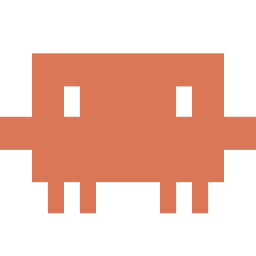

STATE
OmniAgent
/
session restore
4 terminals
Where do your projects live?
Point OmniAgent at one folder. Everything inside gets walked, parsed and linked into your local brain — nothing leaves this machine.
Local-first
Graph, memory and transcripts stay on disk.
Stock engines
Your Claude, Codex or shell — unmodified.
No setup
MCP wiring and briefing happen for you.
SESSIONS
3
session restore
2×2

token rotation
zsh
New terminal
⌘T
brain ingest
1×2
release checks
1
FILES
14changed
Filter files
src
auth
2
token.service.ts
M
token.service.spec.ts
A
stripe
3
voice
2
database
4
package.json
M
README.md
BB
Bruno Bonando
Brain indexed · 8m ago
token rotation
Claude Code
main
● Read src/auth/token.service.ts (168 lines)
✻ Two parallel requests both rotate the refresh token; the second one loses. Coalescing the rotation behind one in-flight promise.
● Edit src/auth/token.service.ts
- const fresh = await this.rotate(token);
+ const fresh = await this.rotateShared(token);
+ // one in-flight rotation per user
+ // one in-flight rotation per user
● Bash npm run test:e2e -- auth
› 12 tests, auth.e2e-spec.ts
✓ 12 passed, 0 failed (8.4s)
›
❯
Prompt Claude Code and press Enter…
⌘↵ run · ⌘K palette
webhook retries
 Codex
main
Codex
main
❯ codex "unit tests for stripe webhook retries"
▸ Reading src/stripe/webhook.service.ts
▸ Plan: 4 cases — replay, bad signature, out-of-order events, idempotency key reuse
▸ Write src/stripe/webhook.service.spec.ts
+ it("ignores replayed event ids", …)
+ it("rejects a bad signature with 400", …)
+ it("rejects a bad signature with 400", …)
▸ npm run test -- webhook.service
PASS · 4 passed, 4 total (2.1s)
Needs approval — write 3 files outside src/stripe/?
users.last_seen_at
 AntiGravity
db/schema
AntiGravity
db/schema
❯ antigravity "add last_seen_at to users, with index"
◆ Edit database/src/drizzle/schema/users.ts
+ lastSeenAt: timestamp("last_seen_at",
+ { withTimezone: true }),
+ { withTimezone: true }),
◆ npm run db:generate
drizzle-kit: 1 table changed, 1 index added
→ 0043_curly_stingray.sql
◆ Migration ready. Run db:migrate to apply.
❯
Prompt AntiGravity and press Enter…
memory note saved
zsh
Shell
feat/voice-latency
❯ git status -sb
## feat/voice-latency…origin/feat/voice-latency
M src/voice/stream.service.ts
M src/voice/stream.service.spec.ts
❯ npm run lint
eslint . --ext .ts
✔ no problems (2 files checked)
❯
~/Bruno.Digital/OmniAgent-ADE
main
Uncommitted
14 files
+1284
−312
All 14
By terminal
Staged 3
CLAUDE CODE · token rotation
src/auth/token.service.ts
+21−4
61 async rotateShared(token) {
62- const fresh = await this.rotate(t)
62+ if (this.inflight.has(uid))
63+ return this.inflight.get(uid)
64 }
src/auth/token.service.spec.ts
+49−0
A
CODEX · webhook retries
src/stripe/webhook.service.spec.ts
+125−0
A
src/stripe/webhook.service.ts
+18−12
M
ANTIGRAVITY · users.last_seen_at
drizzle/0043_curly_stingray.sql
+12−0
A
database/src/drizzle/schema/users.ts
+4−1
M
Memory note will be written on commit.
⇧⌘G
token rotation
session restore · terminal 1 of 4
Claude Code
main
● Read src/auth/token.service.ts (168 lines)
✻ Two parallel requests both rotate the refresh token; the second one loses. Coalescing the rotation behind one in-flight promise.
● Edit src/auth/token.service.ts
- const fresh = await this.rotate(token);
+ const fresh = await this.rotateShared(token);
+ // one in-flight rotation per user
+ // one in-flight rotation per user
● Bash npm run test:e2e -- auth
› 12 tests, auth.e2e-spec.ts
✓ 12 passed, 0 failed (8.4s)
● Read src/auth/session.store.ts (94 lines)
✻ Restoring a session must not resurrect a dead PTY — reattaching to the transcript and respawning the engine is the honest path.
● Edit src/auth/session.store.ts
+ if (!pty.alive) return this.respawn(session, { briefed: true });
● Bash cargo test -p omniagent --lib sessions
✓ 41 passed, 0 failed (12.6s)
›
❯
Prompt Claude Code and press Enter…
⌃⌘F focus · ⌘⇧] next terminal
Notifications
3 new
All 3
This workspace 2
Needs you 1
NEEDS YOU
webhook retries
CODEX
1m
Wants to write 3 files outside src/stripe/ · session restore
EARLIER TODAY
users.last_seen_at
AG
14m
Done · migration ready, 2 files +16 −1
voice latency probe
CLAUDE
2h
Failed · stream.service.spec.ts 3 failing · Voice workspace
WORKSPACES
3
OmniAgent
~/Bruno.Digital/OmniAgent-ADE
3 sessions
Voice
~/Bruno.Digital/voice-latency
1 session
Bruno.Studio
~/Bruno.Digital/bruno-studio-site
no sessions
New workspace
New terminal
in session restore · 4 of 8 used
⌘T
NAME
Terminal #5
Pre-filled — rename any time by double-clicking the terminal header.
ENGINE
Claude CodePre-briefed from the brain, MCP-wired
⌘1
ShellYour default $SHELL
⌘0
GitHub CopilotNot installed — install CLI
Opens in the session's next free slot.
New session
in OmniAgent workspace
⌘N
WHAT ARE YOU DOING?
coalesce refresh-token rotation
Becomes the session name and the first prompt. Leave empty for a bare terminal.
TERMINAL LAYOUT
max 8 terminals per session
1
1×2
2×2
2×3
2×4
ENGINE PER TERMINAL
each terminal runs its own agent or shell
1
Claude Code
2
Codex
3
AntiGravity
4
Shell
WORKING FOLDER
OmniAgent-ADE/src-tauri/src
Change
4 terminals boot briefed on 41,208 brain nodes
New workspace
from the workspace menu
PROJECT FOLDER
~/Documents/Bruno.Digital/omniagent-web
FOUND IN THIS FOLDER
1,842
files to walk
TS · Rust
languages
git ✓
4 branches
Ingest into the brain nowWalk, parse and link in the background — you can start working immediately.
Review memory notes before commitOff: session notes auto-commit to your repo.
Scoped access — only this folder is readable.